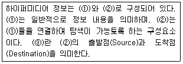
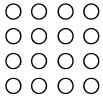
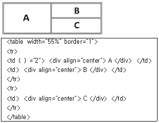

멀티미디어콘텐츠제작전문가(구) (2009-07-26 기출문제)
1과목: 멀티미디어개론
1. 데이터 통신에 관한 설명 중 거리가 가장 먼 것은?
- 단방향 통신은 공중파 방송과 같이 송신측과 수신측이 정해져 있다.
- 전화기는 전이중 통신이 대표적인 예이다.
- 반이중 통신은 한 번에 한쪽 방향으로만 송수신이 가능하다.
- 전이중 통신은 무전기와 같이 사용 획득권을 이용하는 방식이다.
(정답률: 알수없음)

2. TCP/IP에 대한 설명으로 거리가 가장 먼 것은?
- TCP는 데이터의 흐름을 관리하고 수신된 데이터가 정확한지 확인하는 기능을 수행한다.
- IP에서의 주소는 123.123.123.123처럼 255 이하의 숫자 4개를 마침표로 구분하여 표기한다.
- Transmission Control Protocol/Internet Protocol의 약자로 인터넷에서 사용하는 데이터 전송규약이다.
- 송신되는 데이터가 큰 경우에는 500문자 이하의 패킷으로 나누어 여러 번에 걸쳐 전송한다.
(정답률: 알수없음)
3. 다음은 표준에 대한 설명이다. 틀린 것은?
- H.261은 MPEG-1의 코딩기술을 이어받아 순방향 움직임 벡터에 대한 기준 매크로 블록과 역방향 움직임 벡터의 기준 매크로 블록의 평균값을 최종적인 예측 기준 데이터로 사용한다.
- JPEG의 순차적 모드는 이미지 분할, DCT(Discrete Cosine Transform), 양자화, 무손실 압축의 단계를 통해 압축된 데이터를 얻게 된다.
- MPEG-1은 순방향 예측 프레임(P-프레임:Predicted frame)과 양방향 예측 프레임(B-프레임:Bidirectional frame)을 통해 이미 인코딩 된 다른 프레임의 정보를 사용한다.
- G.72X의 표준에 따라 샘플링을 할 때, 샘플의 진폭(amplitude)은 인코딩 하는 비트의 수에 따라 8비트 샘플은 256 레벨의 진폭을 나타낼 수 있으며, 16 비트 인코딩은 훨씬 높은 분해도(resolution)를 얻을 수 있다.
(정답률: 알수없음)
4. 다음 IPv6에 대한 설명으로 거리가 가장 먼 내용은?
- IP주소를 IPv4의 32비트 길이에서 64비트로 확장하였다.
- IPv4의 헤더필드 중 일부를 삭제하거나 선택영역으로 변경하였다.
- 각기 다른 대역폭에서도 비디오 데이터의 처리가 무리 없이 이루어지도록 대역폭을 확보할 수 있게 지원한다.
- 보안과 관련하여 안전한 통신, 메시지의 발신지 확인, 암호화 기능 등을 제공한다.
(정답률: 알수없음)
5. 다음 중 TCP/IP와 같은 인터넷 운영 프로토콜의 표준을 정의하는 기구는?
- ISO
- IETF
- ITU
- TTA
(정답률: 알수없음)
6. MP3 파일에 대한 설명으로 올바른 것은?
- Creative Lab의 오디오 카드에서 사운드 정보를 저장하기 위해 사용하는 파일 형식이다.
- 빠른 전송률과 높은 압축률로 인해 신시간 스트리밍에 사용되는 Real Audio 포맷이다.
- Microsoft에서 개발한 Window Media Format을 기반으로 한 인터넷 전송용 포맷이다.
- 오디오 CD와 유사한 음질을 보이면서 데이터 크기가 작아 음악저장용으로 널리 사용된다.
(정답률: 알수없음)
7. 다음 암호화 기술 중 평문의 크기가 블록단위로 고정된 후 암호화되는 대칭키 암호 알고리즘은 어느 것인가?
- 블록 암호 알고리즘
- 스트림 암호 알고리즘
- 공개키 암호 알고리즘
- 해쉬 암호 알고리즘
(정답률: 알수없음)
8. 사용자 인증 및 인터넷상에서 외부 접근자의 액세스 제어 가능한 서버에 해당하는 것은?
- 메일 서버
- 프록시 서버와 방화벽 서버
- VOD 서버
- 통신 서버
(정답률: 알수없음)
9. 다음 중 녹음 시간이 동일할 때 디지털 오디오의 데이터 크기가 가장 큰 것은?
- 샘플링 비율 21kHz, 샘플 비트 8bit, 모노 녹음
- 샘플링 비율 11kHz, 샘플 비트 16bit, 모노 녹음
- 샘플링 비율 21kHz, 샘플 비트 16bit, 스테레오 녹음
- 샘플링 비율 21kHz, 샘플 비트 8bit, 스테레오 녹음
(정답률: 알수없음)
10. 다음 중 모바일 플랫폼 WIPI에 대한 설명으로 적합하지 않은 것은?
- 멀티태스킹을 지원한다.
- C 언어를 지원한다.
- 접근 제어 기능의 보안기능을 지원하지 않는다.
- 바이너리 자바와 호환성을 갖는다.
(정답률: 알수없음)
11. DVD의 약어로 맞는 것은?
- Dynamically - Variable Disc
- Distributed Video Disc
- Double Volume Disc
- Digital Versatile Disc
(정답률: 알수없음)
12. 플러그 앤 플레이(Plug and Play : PnP) 기능을 가장 올바르게 설명한 것은?
- 전자우편의 전달과 저장을 제공한다.
- 운영체제에 의해 지원되는 기능으로 PC에 설치되는 장치 드라이버를 손쉽게 설치 할 수 있도록 하는 기능이다.
- 윈도우 98에서 지원하는 기능으로서 데이터를 고속으로 전송하며, 처리할 수 있는 기능이다.
- CD-ROM에서 autorun.inf 파일을 자동으로 검색하여 이 파일이 존재한다면, 운영체제에 의하여 자동으로 실행하도록 한다.
(정답률: 알수없음)
13. 스트리밍(Streaming)에 대한 설명으로 거리가 가장 먼 것은?
- 송수신자간에 정보를 원활히 전달할 때 시간 지연을 줄이기 위한 기법이다.
- 데이터의 송수신에 소요되는 전체시간이 늘어난다.
- 원하는 데이터를 실시간으로 획득할 수 있다.
- 재생하는 경우에 끊김 현상이 없다.
(정답률: 알수없음)
14. 픽셀 단위로 그림정보를 저장하는 파일 형식은?
- 메타 파일
- 포스트스크립트 파일
- 비트맵 파일
- 벡터 파일
(정답률: 알수없음)
15. 비선형적 그래프 구조를 가지며, 각 노드들이 텍스트의 작은 덩어리로 연결되는 것은?
- 마크업텍스트
- ISO 문자 집합
- 하이퍼텍스트
- 구조적텍스트
(정답률: 알수없음)
16. 다중화 방법 중 적은 주파수대역을 점하는 여러 신호들이 각기 다른 반송파에 변조되어, 넓은 주파수 대역을 가진 하나의 전송로를 따라서 동시에 전송되는 방식은?
- FDM
- TDM
- CDM
- WDM
(정답률: 알수없음)
17. 다음 중 미디어에 대한 매체별 분류가 틀린 것은?
- 표현 매체 - 문자, 소리
- 무선 매체 - LAN, 전화
- 지각 매체 - 청각, 시각
- 프레젠테이션 매체 - 스크린, 마이크
(정답률: 알수없음)
18. 디지털 신호 처리(DSP) 루틴을 이용해서 넣을 수 있는 특수 효과가 아닌 것은?
- 잔향
- 코러스
- 지연
- 등화
(정답률: 알수없음)
19. 그래픽 데이터와 이미지 데이터를 표현할 때 사용되는 비트맵 방식의 특징으로 거리가 먼 것은?
- 회전, 확대 등의 연산이 자유롭다.
- 사진이나 비디오 정지화면을 표현하는데 유리하다.
- 색상의 점진적인 변화 표현에 유리하다.
- 픽셀 단위로 색상이나 색의 강도 정보를 표현한다.
(정답률: 알수없음)
20. 다음 중 하나의 문자를 8비트 크기의 옥테트(Octet) 4개로 표현하고, 특히 뒤에 있는 옥테트를 이용한 코드세트를 UCS-2 라고 부르는 코드는 무엇인가?
- ASCII
- Unicode
- KSC 5601
- EBCDIC
(정답률: 알수없음)
21. 다음 중 2개의 서로 다른 이미지나 3차원 모델 사이에 점진적으로 변화해 가는 모습을 보여주는 애니메이션 기법은 어느 것인가?
- 모핑
- 도려내기 효과
- 입자시스템
- 과장효과
(정답률: 알수없음)
22. 멀티미디어 구성요소 중 오디오/사운드에서 음의 3요소에 속하지 않는 것은?
- 음의 높이
- 음의 크기
- 음의 길이
- 음색
(정답률: 알수없음)
23. ( ) 안에 적절한 용어를 순서대로 나열한 것은?

- ① 노드 ② 앵커 ③ 링크
- ① 노드 ② 링크 ③ 앵커
- ① 앵커 ② 링크 ③ 노드
- ① 앵커 ② 노드 ③ 링크
(정답률: 알수없음)
24. 다음 중 텍스트 미디어에 대한 설명 중 거리가 가장 먼 것은?
- 텍스트의 압축은 통계적 특성을 이용한 손실 압축을 사용한다.
- 텍스트가 비순차적으로 연결되는 문서를 하이퍼텍스트라 한다.
- 포맷 텍스트는 문서구조 포맷 정보 등을 포함하는 텍스트이다.
- UNIX에서 사용하는 텍스트 압축 프로그램에는 gzip이 있다.
(정답률: 알수없음)
25. 이미지는 픽셀 단위로 작업이 처리되므로 경계선이 계단 모양으로 부자연스럽게 나타난다. 이것을 처리하기 위해 물체의 색과 바탕면 색의 중간 값을 정하여 표현하여 보다 자연스러운 이미지로 만들어 주는 기법을 무엇이라 하는가?
- 디어링
- 앨리어싱
- 안티앨리어싱
- 플래싱
(정답률: 알수없음)
2과목: 멀티미디어기획및디자인
26. 디자인의 시각 원리 중에서 동일한 요소를 2개 이상 배열하는 의미를 변화시키는 원리는?
- 통일
- 율동
- 반복
- 비례
(정답률: 알수없음)
27. “서로가 대조되는 양극단이 비슷하거나 조화를 이루는 일련의 단계로서 연결된 하나의 예속된 순서이다. 자연 질서의 가장 일반적이고 기본적인 형태이며 반복의 경우 보다 한층 동적인 표정과 경쾌한 율동감을 가지고 있어 보는 사람에게 힘찬 느낌을 준다.”에 해당하는 디자인 원리는 무엇인가?
- 변화
- 조화
- 균형
- 점이
(정답률: 알수없음)
28. 제품의 라이프 사이클(Product Life Cycle) 중 소비자의 인지도가 증가하여 생산수요가 급격히 증가하는 단계는?
- 성장기
- 성숙기
- 경쟁기
- 도입기
(정답률: 알수없음)
29. “소비자 특성 분석, 판매 분석, 지역별 판매량 배분 분석, 소비자의 태도와 동기 조사”와 관련된 마케팅 조사 영역은?
- 시장 조사
- 제품 조사
- 유통 경로 조사
- 가격 조사
(정답률: 알수없음)
30. 아이디어 발상기법 중 브레인스토밍에 대한 설명으로 거리가 가장 먼 것은?
- 집단 기법으로 5~7명이 적당하다.
- 자유롭게 발언하며, 모든 것을 기록한다.
- 자유로운 발상을 위해 리더는 필요 없다.
- 내용의 평가는 독자성과 실현 가능성 또는 아이디어끼리의 결합에 중점을 둔다.
(정답률: 알수없음)
31. 다음 중 평면 디자인의 원리에서 가시적인 시각 요소와 거리가 가장 먼 것은?
- 중량
- 형태
- 색채
- 질감
(정답률: 알수없음)
32. 다음 중 좋은 홈페이지가 갖추어야 할 조건으로 거리가 가장 먼 것은?
- 다양한 사용자들의 환경을 고려하지만 방문자의 의견은 중요하지 않다.
- 홈페이지의 메뉴를 어디에서든 볼 수 있어야 한다.
- 링크를 쉽게 찾을 수 있어야 한다.
- 파일의 크기는 되도록 최적화하여 만든다.
(정답률: 알수없음)
33. 멀티미디어 디자인의 전개 방법 중 그리드 시스템에 대한 설명으로 거리가 먼 것은?
- 정보를 효과적으로 전달하기 위해 사용한다.
- 많은 양의 정보를 일목요연하게 체계적으로 배치할 수 있다.
- 시간은 걸리지만 손쉽게 배치할 수 있다.
- 시각적 조직화를 위해 사용한다.
(정답률: 알수없음)
34. 멀티미디어 콘텐츠 기획자의 역할에 대한 설명 중 거리가 가장 먼 것은?
- 제작팀 내부에서 프로젝트를 직접 수행하고 감독하는 중심적 역할이다.
- 개발할 서비스의 정체성이 무엇인지를 규정하고 유사한 모델을 찾아 개발을 구체화해 나간다.
- 프로젝트 내용 자체의 깊이, 신뢰성, 정확성을 기하는 일을 한다.
- 반드시 디자이너나 프로그래머 보다 콘텐츠 제작 지식이 크게 필요하다.
(정답률: 알수없음)
35. 다음 그림이 보여주는 게슈탈트의 법칙은 무엇인가?

- 유사성의 원리
- 계속성의 원리
- 대칭성의 원리
- 근접성의 원리
(정답률: 알수없음)
36. 다음 중 디지털 색채에 대한 설명으로 거리가 가장 먼 것은?
- 컴퓨터를 통해 신호를 주고받으며 색을 재현하는 모든 장치에서 보여지는 색을 말한다.
- 데이터 입출력장치와 이를 처리하는 컴퓨터의 사양에 따라 색이 달라진다.
- 디지털 카메라와 컬러 핸드폰 액정도 디지털 색채와 같은 특징을 가지고 있다.
- 스캐너를 통해 입력된 사진은 디지털 색채라고 볼 수 없다.
(정답률: 알수없음)
37. 글자의 가로, 세로 끝부분에 짧은 획이 붙어 있는 세리프체가 아닌 것은?
- 바탕체
- 신명조
- 고딕체
- Times New Roman
(정답률: 알수없음)
38. 타이포그래피(typography)에 대한 설명 중 거리가 가장 먼 것은?
- 활자, 혹은 활판에 의한 인쇄술을 가리켜왔지만 오늘날에는 주로 글자를 구성하는 디자인을 일컫는다.
- 글자체, 글자크기, 글자사이, 글줄사이, 여백 등 을 조절하여 전체적으로 읽기에 편하도록 구성하는 기술을 말한다.
- 활자와 여러 가지 요소들을 이용하여 지면을 아름답고 내용이 충실히 전달되도록 하는 것이다.
- 타이포그래피(typography)는 문자라는 의미의 그리스어 text 에서 유래한 말이다.
(정답률: 알수없음)
39. 정지된 비트맵 형태의 로고나 심볼을 웹상의 콘텐츠로 사용할 때 가장 적합한 파일 형식은?
- GIF
- BMP
- SWF
- RA
(정답률: 알수없음)
40. 디더링(Dithering)에 대한 설명으로 옳지 않은 것은?
- 제한된 수의 색상을 사용하여 다양한 색상을 시각적으로 섞어 만드는 작업니다.
- 포토샵의 디더링 옵션으로 색상 간의 경계를 자연스럽게 흩어주는 방식인 디퓨전이 있다.
- 해당 픽셀에서 표현하고자하는 컬러와 가장 가까운 컬러 값을 사용하면 가장 우수한 화질을 얻을 수 있다.
- 두 개 이상의 컬러를 조합하여 특정 컬러를 표시하면 원래 이미지와 좀 더 가까운 이미지를 표현할 수 있다.
(정답률: 알수없음)
41. 픽셀과 해상도에 대한 설명으로 거리가 가장 먼 것은?
- 픽셀은 더 이상 나누어질 수 없는 최소단위인 종횡비로 표시되며 대부분의 컴퓨터에서 사용되는 종횡비는 1:1의 정사각형이다.
- 이미지 하나를 표현하는데 사용되는 가로, 세로 공간 안의 픽셀의 수를 해상도라 한다.
- 픽셀이란 picture와 element 두 단어의 합성어로 디지털 이미지의 최소단위를 말한다.
- 픽셀해상도는 하나의 픽셀이 몇 bit의 정보를 담고 있느 냐에 따라 결정되는데 8bit의 경우 65536색상을 표현할 수 있다.
(정답률: 알수없음)
42. 다음 중 색의 3속성이 아닌 것은?
- 명도
- 조도
- 채도
- 색상
(정답률: 알수없음)
43. 감산 혼합에 대한 설명으로 거리가 가장 먼 것은?
- 색료 또는 물감의 혼합을 일컫는다.
- 빛의 성질을 이용하여 컬러를 표현하는 컬러 모델이다.
- 기본 3원색을 혼합하면 검은색이 된다.
- 기본 3원색은 Yellow, Magenta, Cyan 이다.
(정답률: 알수없음)
44. 다음 중 무채색은?
- 파랑
- 회색
- 노랑
- 빨강
(정답률: 알수없음)
45. 디자인의 원리에 대한 설명으로 틀린 것은?
- 균형은 모든 생물체의 생존에 필수적 요소로 균형이 잡혀있다는 것은 자연스럽게 평형을 유지하는 것을 의미하여 안정감을 창조하는 질로서 정의된다.
- 조화는 적절한 통일과 변화가 잘 어우러질 때 성립되며 좋은 조화는 상호간의 공통성이 있음과 동시에 차이가 있을 때 얻어지는 것이다.
- 율동은 다른 원리에 비하여 생명감과 존재감이 가장 강하게 나타나며 자연의 본질적인 특징으로 대칭, 비대칭, 비례가 있다.
- 통일과 변화는 서로 다른 성질을 가지면서도 긴밀한 관계를 상호유지하지 않고는 미를 표현할 수 없는 유기적 관계를 가진다.
(정답률: 알수없음)
46. 색의 대비현상에 관한 내용 중에서 잘못된 것은?
- 명도대비 : 명도가 다른 두색이 서로의 영향으로 명도차가 더 크게 나타나는 것
- 연변대비 : 두 색이 경계부분에서 색의 3속성 별로 대비 현상이 더욱 강하게 나타나는 것
- 계시대비 : 먼저 본 색의 영향으로 다음에 보는 색이 먼저 본 색의 보색으로 보이는 것
- 보색대비 : 보색관계인 두색이 서로의 영향으로 각각의 채도가 더 높게 보이는 것
(정답률: 알수없음)
47. 선(line)의 특성이 아닌 것은?
- 직선이거나 곡선, 굵은 선이나 가는 선, 실선이나 점선이 될 수 있다.
- 선은 공간에서 한 점이 다른 모양으로 변형될 때 만들어진다.
- 선의 외관은 명암, 색채, 질감 또는 이러한 특성을 모두 함께 가질 수도 있다.
- 실선이나 점선의 특성은 다른 물체에 의해 가려진 사물의 위치나 움직임을 나타내거나 표시할 수 있다.
(정답률: 알수없음)
48. 스토리 보드에 들어가게 될 내용이라 볼 수 없는 것은?
- 해당 페이지의 제목, 번호
- 제작에 필요한 사용 장비와 활용할 프로그램들
- 해당 페이지의 전체적인 구성(Layout)
- 수정 및 편집 등이 행해진 일정별 날짜
(정답률: 알수없음)
49. 다음 중 그래픽 심볼을 조합 사용해서 키보드 또는 마우스의 동작만으로 간단하게 명령을 수행하게 하는 방식을 나타내는 것으로 사용자는 복잡한 문자 명령어를 익히지 않아도 쉽게 사용할 수 있는 방식은?
- Anchor
- GUI
- Hypermedia
- Mapping
(정답률: 알수없음)
50. 심벌(symbol)에 대한 설명으로 적합하지 않는 것은?
- 실루엣이나 윤곽선으로 그려진 표현은 시각적인 메시지를 창조하는데 사용될 수 있다.
- 심벌은 기하학적 모양으로만 존재한다.
- 언어의 한계를 넘어 인간의 커뮤니케이션을 용이하게 만든다.
- 사실적 표현, 추상적 표현, 또는 추상적 상징으로 분류할 수 있다.
(정답률: 알수없음)
3과목: 멀티미디어저작
51. 하이퍼링크에 대한 설명으로 맞는 것은?
- 하이퍼텍스트는 선형 구조의 텍스트를 말한다.
- 링크에서만 하이퍼텍스트가 지원이 된다.
- 같은 페이지 내에서 이동하는 링크는 만들 수 없다.
- 디렉토리 변경이 잦은 경우, 상대 경로를 쓰는 것이 좋다.
(정답률: 알수없음)
52. HyperCard에 대한 설명 중 거리가 가장 먼 것은?
- 1987년에 소개된 HyperCard는 Apple사에서 만든 인덱스 카드를 사용한다.
- 사용자는 카드 상에 텍스트, 그래픽스, 사운드와 같은 혼합된 정보를 저장한다.
- 선형적인 방법으로 매킨토시 상에서 정보를 조직하는 도구이다.
- 카드의 집단은 다시 “Stack”으로 조직될 수 있다.
(정답률: 알수없음)
53. 디렉터의 특징에 대한 설명으로 틀린 것은?
- 벡터방식의 이미지를 사용하여 높은 화질을 유지한다.
- 뛰어난 수행능력을 가진 shockwave와 같은 멀티미디어 재생기술을 활용하여 인터넷 저작물을 개발할 수 있다.
- 비주얼한 저작환경을 통하여 애플리케이션과 프레젠테이션을 사용하기 쉽고 빠른 형태로 발전시킨다.
- shocked fonts와 멀티미디어 하이퍼링크를 이용하여 스마트 텍스트와 네비게이션을 제작할 수 있다.
(정답률: 알수없음)
54. 웹 페이지를 만들 때 사용하는 링크 중 널 링크가 있다. 다음 중 널 링크(null link)에 대한 설명으로 옳은 것은?
- 직접파일은 연결하지 않고 링크기능만 가진다.
- 드림위버에서 속성 관리자의 링크필드에 &라고 입력하면 널 링크가 만들어진다.
- 직접 파일을 연결하는 링크이다.
- 자바스크립트코드를 실행하기 위해 스크립트 함수를 호출하는 링크이다.
(정답률: 알수없음)
55. 동영상 파일의 종류가 아닌 것은?
- TIFF
- RM
- MOV
- AVI
(정답률: 알수없음)
56. 클래스가 맴버 함수나 맴버 변수 등 자신의 모든 특성을 기준으로 자식 클래스를 작성할 수 있는 특성은?
- 캡슐화
- 다양성
- 상속성
- 종속성
(정답률: 알수없음)
57. 객체지향 개념 중 “어떤 실세계 엔티티의 내용과 행위를 기술하는데 요구되는 데이터와 절차 추상화들을 캡슐화 하는 객체-지향 개념이다.”에 해당하는 개념은?
- class
- property
- message
- object
(정답률: 알수없음)
58. 컴퓨터에 의해서 만들어진 사람형상을 한 모델의 한 종류로 가상환경 내의 참여자를 의미하며, 가상환경에서 사용자를 대신해서 활동하는 개체를 의미하는 것은?
- 아바타
- 사이버스페이스
- 채팅
- 오브젝트
(정답률: 알수없음)
59. 다음 중 XML에 대한 설명으로 틀린 것은?
- XML은 SGML과 HTML과 같이 사용하면서도 구현하기 쉽고 상호 운용할 수 있도록 고안되었다.
- DOM(Document Object Model)과 SAX(Simple API for XML)로 XML 문서를 분석한다.
- 스키마(Schema)는 여러 문서가 처리될 때 이름의 충돌을 피하게 해주는 역할을 한다.
- 정의할 요소와 속성의 수에 제한이 없고 데이터의 타입과 구조를 정의하며 서로 독립적으로 사용된다.
(정답률: 알수없음)
60. XML을 사용함으로써 얻을 수 있는 장점이 아닌 것은?
- 데이터의 비교와 연산이 수월하다.
- 플랫폼과 언어에 독립적이다.
- XML은 특정 벤더에 종속적이다.
- 필요에 따라 새로운 태그 추가가 가능하다.
(정답률: 알수없음)
61. 플래시에서 사용되는 타임라인(Time Line)을 이용한 애니메이션 무비에 상호작용(Interactive)이 포함된 강력한 멀티미디어 애니메이션을 제작할 수 있도록 도와주는 스크립트는?
- 자바스크립트
- 링고스크립트
- 오픈스크립트
- 액션스크립트
(정답률: 알수없음)
62. 플래시에서 무비가 실행된 후 자동으로 다시 실행하게 하려고 한다. 무비의 마지막 프레임에 들어가야 할 스크립트로 맞는 것은?
- On(Release) Play End On
- Go to and Play(1)
- If Frame is Loaded(intro, end) Go to and Play(second) End Frame Loaded
- Fs Command("intro", 3) Play
(정답률: 알수없음)
63. DBMS에서 검색이나 갱신과 같은 데이터베이스 연산을 저장 데이터 관리자를 통해 디스크에 저장된 데이터베이스를 실행하는 구성 요소는?
- DDL 컴파일러
- 예비 컴파일러
- 질의어 처리기
- 런타임 데이터베이스 처리기
(정답률: 알수없음)
64. 데이터베이스의 특성으로 거리가 가장 먼 것은?
- 신시간 접근성
- 정적인 데이터
- 데이터 내용의 일관성 유지
- 동시공유
(정답률: 알수없음)
65. 시스템 카탈로그의 구성 요소가 아닌 것은?
- SYSCOLUMNS
- SYSTABLES
- SYSCONTENTS
- SYSVIEW
(정답률: 알수없음)
66. 스타일시트(CSS)에 대한 장점과 단점의 내용으로 틀린 것은?
- 개발이 효율적이고 유연해진다.
- 스타일을 선택적으로 변경할 수 있다.
- 브라우저의 버전과 상관없이 동일하게 적용된다.
- 요소를 배치하는데 효과적이다.
(정답률: 알수없음)
67. 스타일 시트에서 텍스트에 밑줄이 생기게 하는 속성 지정은?
- text-line : underline
- text-line : line-through
- text-decoration : underline
- text-decoration : line-through
(정답률: 알수없음)
68. HTML 태그에서 사용하는 논리적 스타일을 지정하는 태그는 어느 것인가?
- ＜BLINK＞
- ＜TT＞
- ＜CODE＞
- ＜SUB＞
(정답률: 알수없음)
69. 웹 문서에 mp3파일의 노래를 삽입하여 노래가 재생되도록 하고자 한다. 적용될 태그는?
- ＜IMG＞
- ＜EMBED＞
- ＜SRC＞
- ＜MP3＞
(정답률: 알수없음)
70. 아래와 같은 테이블을 만들기 위하여, ( )안에 들어갈 태그로 옳은 것은?

- rowspan
- colspan
- cellpadding
- cell
(정답률: 알수없음)
71. 자바의 주요 특성에 대한 설명 중 틀린 것은?
- 자바는 객체 지향적이다.
- 운영체제나 CPU에 종속적이다.
- 서버가 아닌 클라이언트에서 실행되는 것 외에도, 자바 애플릿은 빠르게 실행되기 위해 설계된 다른 특성들을 가진다.
- 네트워크상에서 쓸 수 있도록 미국 썬 마이크로시스템사에서 개발한 객체 지향 프로그래밍 언어이다.
(정답률: 알수없음)
72. 다음 중 자바스크립트에 대한 설명으로 옳은 것은?
- window.focus() : 창에 초점을 부여한다.
- window.open() : 열려있는 창에 문자를 입력한다.
- location.reload() : 이전 페이지로 돌아간다.
- window.status : 브라우저 크기를 설정한 크기대로 유지한다.
(정답률: 알수없음)
73. 자바스크립트(JavaScript)에서 객체(Object)에 대한 설명으로 틀린 것은?
- 객체는 속성(Property)과 메서드(Method)를 가지며, 속성은 다른 객체와 구별할 수 있는 기준이 되며, 메서드는 객체가 처리할 수 있는 기능을 의미한다.
- 자바스크립트는 내장 객체를 지원하지 않는다.
- my_data.display()에서, my_data는 객체를 의미하며, display()는 메서드(Method)로 객체의 동작을 지정하는 함수를 의미한다.
- 자바스크립트는 객체 지향언어의 기본적인 특징을 가지고 있으나, 데이터 추상화, 상속성, 다형성 등과 같은 객체 지향언어의 일반적인 특성은 지원하지 않는다.
(정답률: 알수없음)
74. 자바스크립트의 제어문 중 for문에 대한 형식으로 올바른 것은?
- for(초기식; 조건; 증감식) { 문장 }
- for(조건) { 문장 }
- for(수식) { case 값1: 문자1: break case 값2: 문장2: break … default: 문장 }
- for{ 문장 } while(조건)
(정답률: 알수없음)
75. 다음 중 JavaScript를 사용해서 페이지의 배경색상을 초록색(green)으로 바꾸려고 할 때 맞는 코드는?
- bcolor="green";
- page.bgcolor="green";
- document.bgcolor="green";
- document.changeBgColor"green";
(정답률: 알수없음)
4과목: 멀티미디어제작기술
76. 다음 중 허브와 브리지의 기능을 혼합시킨 네트워크 장비는?
- CSU/DSU
- Switch
- LAN
- FIREWALL
(정답률: 알수없음)
77. 인터넷 전송 방식 중에서 하나의 송신자가 특정한 다수의 수신자에게 데이터를 전송하는 방식은?
- 유니캐스트
- 이중캐스트
- 브로드캐스트
- 멀티캐스트
(정답률: 알수없음)
78. OSI 상위 계층에서 하위 계층으로 데이터를 전달할 때, 데이터에 필요한 제어 정보를 부과하는 행위를 무엇이라 하는가?
- 재합성
- 암호화
- 캡슐화
- 단편화
(정답률: 알수없음)
79. 다음 중 지터(Jitter)에 대한 설명으로 옳은 것은?
- 가청 주파수보다 높은 고주파 성분 발생으로 인한 오류
- 디지털 신호의 전달 과정에서 일어나는 시간 축상의 오차
- 아날로그 파형을 양자화 비트로 표현하면서 발생하는 값의 차이
- 사운드에 원래 고주파 성분이었던 울림이 없어지고 저주 파수의 방해음이 발생하는 것
(정답률: 알수없음)
80. 소리의 기본 요소에 대한 설명 중 틀린 것은?
- 음압레벨의 단위는 사이클을 사용한다.
- 진폭은 사운드 파형의 기준선에서 최고점가지의 높이를 의미하여 소리의 크기와 관련이 있다.
- 주파수는 초당 파형의 반복 횟수를 의미하여 소리의 높낮이를 결정한다.
- 음색은 각 악기가 갖는 고유의 주파수를 말한다.
(정답률: 알수없음)
81. 다음의 미디 메시지 중 실제 건반이 눌린 정보와 같이 실제 악기를 연주하는 정보를 갖는 메시지는 무엇인가?
- 채널 모드 메시지
- 채널 보이스 메시지
- 시스템 공유 메시지
- 시스템 리얼 타임 메시지
(정답률: 알수없음)
82. MIDI에 대한 설명으로 틀린 것은?
- 미디 파일은 일반 오디오 파일보다 크기가 작다.
- Musical Instrument Digital Interface의 약어이다.
- 인터넷을 통한 서로 다른 컴퓨터들을 연결하기 위한 통신규약이다.
- 미디 파일에는 사운드 자체에 대한 데이터를 저장하는 것이 아니라, 사운드를 어떻게 연주할 것인가에 대한 정보가 저장되어 있다.
(정답률: 알수없음)
83. 64Kbps나 192Kbps의 낮은 전송률로 동영상을 보내는 것을 목표로 출발한 영상압축 표준 방식은?
- MPEG-1
- MPEG-2
- MPEG-4
- MPEG-7
(정답률: 알수없음)
84. Caligari사에서 개발한 3차원 그래픽 도구로 강력한 레이트레이싱을 사용할 수 있는 소프트웨어는 무엇인가?
- 3D Studio MAX
- SoftImage XSI
- MAYA
- Truespace
(정답률: 알수없음)
85. 영상 값을 어떤 상수 값으로 나누어 유효자리의 비트수를 줄이는 압축과정은?
- 변형
- 전처리
- 양자화
- 가변길이 부호화
(정답률: 알수없음)
86. 마스크 영상에서 해당하는 키 화상(Key Image)을 추출함과 동시에 배경 영상을 전경영상으로 합성하는 디지털 영상 합성 방법은?
- 필름의 합성
- 전처리과정
- 크로마키합성
- 양자화
(정답률: 알수없음)
87. GIF에 대한 설명으로 거리가 가장 먼 것은?
- 8비트 컬러를 지원하는 대표적인 압축 포맷이다.
- GIF98a에서는 애니메이션 기능을 제공한다.
- 웹에서 JPEG 포맷과 함께 가장 널리 사용된다.
- 많은 컬러를 가지는 큰 이미지의 압축에 효과적이다.
(정답률: 알수없음)
88. 다음 중 벡터 그래픽 파일 형식인 것은?
- PCX
- WMF
- GIF
- JPEG
(정답률: 알수없음)
89. 다음 중 포스트스크립트(postscript) 언어를 활용한 포맷으로 인쇄 및 전문 그래픽 출력장치 등을 위해 최적화 된 파일 포맷은?
- PICT
- JPEG
- EPS
- WMF
(정답률: 알수없음)
90. 하나의 화면이 서서히 사라지면서 다른 화면이 나타나는 화면전환 기법은?
- 컷(Cut)
- 달리(Dolly)
- 디졸브(Dissolve)
- 와이프(Wipe)
(정답률: 알수없음)
91. 다음 카메라 앵글 중 새의 눈으로 보는 것처럼 피사체의 꼭대기에서 촬영하는 기법은?
- 아이레벨 앵글
- 버즈 아이 뷰 앵글
- 로우 앵글
- 사각 앵글
(정답률: 알수없음)
92. 알파 채널에 대한 설명으로 적합한 것은?
- 하나의 이미지를 두개의 채널로 만든 것이다.
- 그래픽상의 한 픽셀의 색이 다른 픽셀의 색과 겹쳐서 나타날 때, 두 색을 효과적으로 융합하도록 해준다.
- 4개의 채널을 이용하는 CMYK보다 색을 자유롭게 쓸 수 없지만 다양한 표현이 가능하다.
- 흰색과 감정색의 2색만을 사용하여 신문에서 흑백사진을 처리하는 방법과 같다.
(정답률: 알수없음)
93. 컴퓨터 그래픽스에 대한 설명으로 맞지 않은 것은?
- 2D, 3D, 애니메이션 등의 의미를 모두 포함하고 있다.
- 좁은 의미로는 문자와 숫자, 이미지, 영상 등으로 표현하여 정보를 전달한다.
- 넓은 의미로는 컴퓨터를 이용한 설계, 인간과 컴퓨터와 의 인터페이스까지 포함한다.
- 실제 느낌과 같은 색채, 형태, 음영, 재질감 표현이 불가능하다.
(정답률: 알수없음)
94. 사극 드라마에서 인물의 얼굴 표정에 집중시켜 인물의 정서와 감정을 표현하기 위하여 피사체의 얼굴만을 화면에 가득 차게 촬영하여 한다. 가장 적합한 샷(Shot)은 무엇인가?
- 풀샷
- 롱샷
- 웨이스트샷
- 클로즈 업
(정답률: 알수없음)
95. “정지화상이나 그래픽들을 연속적으로 보여주어 보는 사람으로 하여금 화상들을 연속된 동작으로 인식하도록 한다.”에 해당하는 애니메이션의 기본 원리는?
- 모핑
- 잔상효과
- 역운동학
- 로토스코핑
(정답률: 알수없음)
96. 래스터(Raster) 방식 이미지에 대한 설명으로 거리가 가장 먼 것은?
- 화면을 확대하면 화질이 저하된다.
- 파일의 크기는 해상도에 비례한다.
- 픽셀 단위로 정보가 저장된다.
- 화면 표시속도가 벡터 방식에 비해 느리다.
(정답률: 알수없음)
97. 미국의 애플 컴퓨터에서 제창한 개인용컴퓨터 및 디지털 오디오, 디지털 비디오용 시리얼 버스 표준규격 인터페이스로 옳은 것은?
- DV
- IEEE1394
- SDI
- Composit
(정답률: 알수없음)
98. 3D 제작도구를 이용하여 애니메이션을 만드는 방법으로 거리가 가장 먼 것은?
- 패스(Path) 애니메이션
- 키 프레임(Key Frame) 애니메이션
- 모션캡쳐(Motion capture) 애니메이션
- 어니언 스키닝(Onion-skinning) 애니메이션
(정답률: 알수없음)
99. 비선형(Nonlinear) 영상 편집의 장점이 아닌 것은?
- 소스의 양에 제한이 없다.
- 편집이 끝난 후에 수정이 쉽다.
- 영상효과를 자유롭게 조합시킴으로써 풍부한 영상을 만들 수 있다.
- 편집을 반복하고 출력을 하는 과정에서 화질 저하가 거의 없다.
(정답률: 알수없음)
100. 디지털위성방송에 적합한 프로그램으로 디지털화하고, 영상/음향신호를 압출하는 역할을 수행하는 시스템은?
- 엔코딩시스템
- 디코딩시스템
- BaseBand시스템
- 방송프로그램시스템
(정답률: 알수없음)
전이중 통신은 무선 통신에서 사용되는 방식으로, 송신과 수신이 동시에 일어날 수 있습니다. 이를 위해 사용 획득권을 이용하여 송신과 수신이 동시에 일어날 수 있도록 합니다. 예를 들어, 무전기에서 상대방이 말하는 동안에도 우리가 말할 수 있는 것이 이에 해당합니다.